Place
Singapore
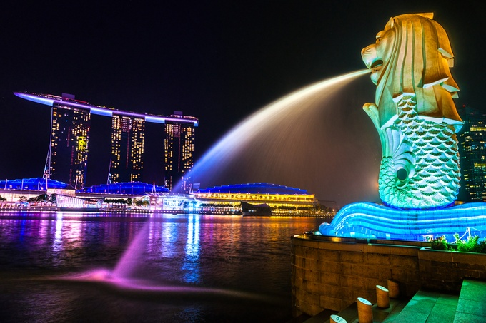
Marina Bay Sands & the Merlion
This is an iconic Singaporean landmark, representing the Marina Bay area. My journey around the world began right here in Singapore. I used to be so afraid of even boarding a plane, but now I am able to travel on my own.
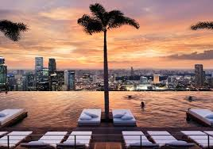
SkyPark Infinity Pool
My pure, heartfelt desire to swim in this pool gave me the strength to overcome a long-standing fear of flying. The sense of openness, looking down over the financial district from 200 meters above the ground, was truly moving.
When I found the courage to take that first step, what awaited me
was an unforgettable experience.
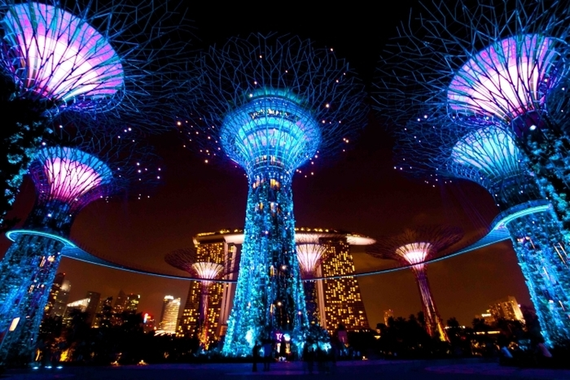
Garden Rhapsody
The "Supertree Grove" at Gardens by the Bay features massive, 25-to-50-meter-tall artificial
trees that light up in sync with music, creating a magical light-and-sound show.

Teh Tarik
A long-established drink stall that has been around since the 1950s. Located along Bussorah Street, it offers a front-row view of a skilled artisan expertly preparing "teh tarik" (pulled tea). It was sweet and delicious.
Hawaii
Waikiki
When Kalakaua Avenue—Waikiki’s main street—is bathed in a golden glow, the silhouettes of palm trees set against the sunset create a scene so beautiful, you could gaze at it forever.
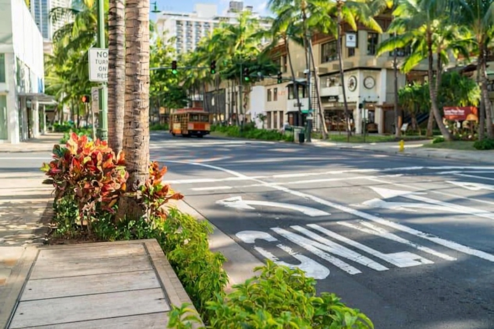
Kalakaua Avenue along the coastline
A beautiful main street lined with palm trees, shops, and hotels. I had a wonderful time thanks
to my son and his girlfriend.

Cruiser
The "Fireworks Dinner Cruise"—available exclusively on Fridays—is a highly recommended
experience for any trip to Waikiki. Whether you are watching Diamond Head, the sunset over the
horizon, or fireworks in the night sky, the breathtaking moments spent aboard the vessel are
sure to be enjoyed by guests of all ages.
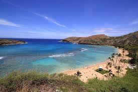
Hanauma-Bay
The views from the observation deck and the slopes are truly spectacular. The contrast between
the sparkling blue sea and the coral reefs enhances the feeling of being on a trip.
Las Vegas
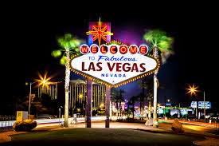
Las Vegas
Las Vegas—a city that never sleeps, blooming in the middle of the desert—is a mecca for entertainment, offering everything from glamorous casinos and spectacular fountain and LED shows to breathtaking panoramic views from its iconic towers.
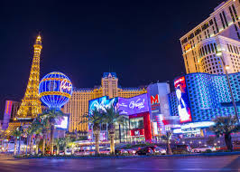
Strip Street
In addition to the casinos and daily shows found within the hotels, there is a wealth of diverse
entertainment, including amusement parks and theaters. The entire city brims with an exciting,
theme-park-like atmosphere.
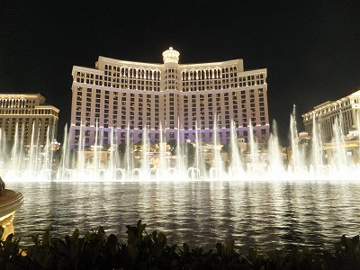
Bellagio Fountain Show
The Bellagio Fountain Show is a famous Las Vegas attraction.
The dazzling spectacle, with its ever-changing displays, is a truly special moment that will
make you stop in your tracks and gaze at it in awe.

Horseshoe Bend
About 450 km from Las Vegas—it was an unforgettable, incredible trip! I was thrilled by the cinematic, movie-like streets of Seligman (on Route 66), and the breathtaking vistas of the Grand Canyon and Horseshoe Bend truly brought home the sheer grandeur of our planet.
Los Angeles
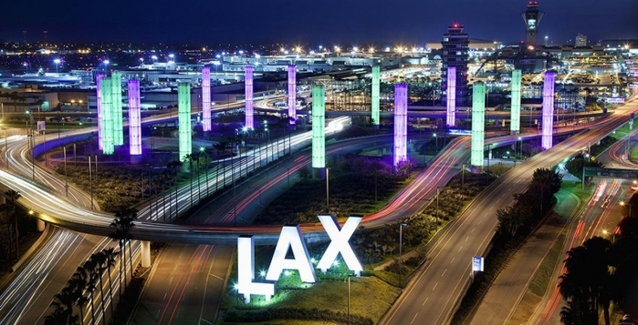
LAX Airport
Located on the West Coast, this airport serves as a gateway to major international cities, particularly those in the Asia-Pacific region. It is one of my favorite views. You can see this scenery if you stay at a hotel near the airport.

Santa Monica
Santa Monica is a shopping paradise that can walk around. You can enjoy the celebrity feeling of
luxury houses.
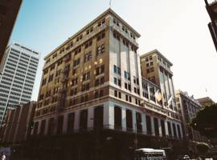
Down Town
It is an office town with tall buildings. It is a place that supports the economy of the
nationwide leading world city LA.
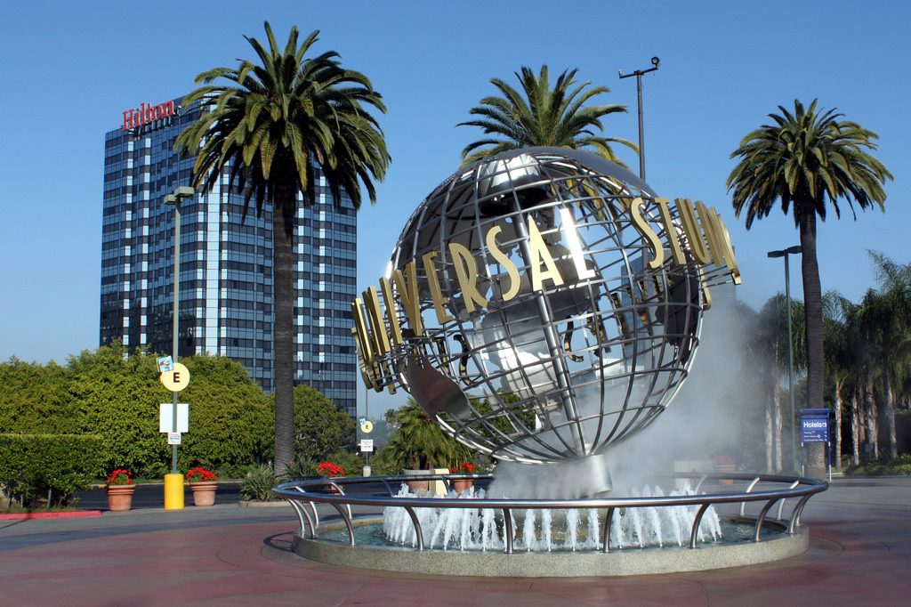
U.S.Los Angeles
Universal Studios Hollywood has many fun studio tours and attractions and you can enjoy behind
the scenes of the movie.
Cebu
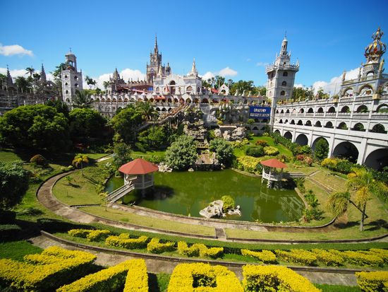
Shimara Church
Simala Church is a beautiful, castle-like sanctuary—a miraculous place said to grant the wishes of those who visit.
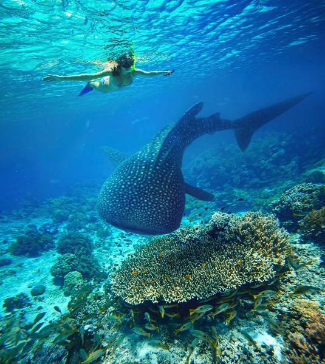
Oslove
A highly recommended tour where you can swim alongside whale sharks. Getting a little too
close—to the point where I almost had my foot nibbled on—is now a fond memory!
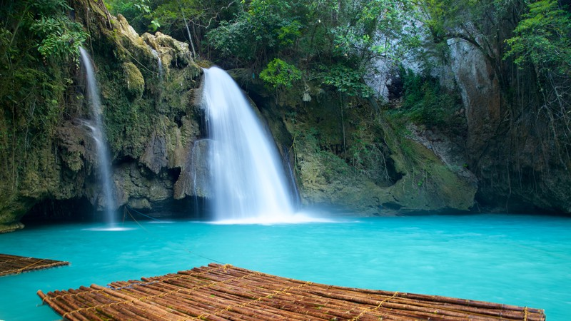
Kawasan waterfall
This natural wonder features stunning, milky-emerald-green waters and offers the unique thrill of being able to walk behind the waterfall. You can even experience something akin to the ascetic training of a *yamabushi* (mountain ascetic) by riding a woven bamboo raft and positioning yourself beneath the cascading water.
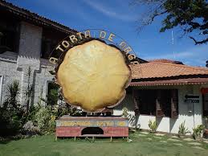
Argao
In a tranquil seaside area, far from the hustle and bustle, you can enjoy treats like tortas and
cocoa.
We had a unique adventure: traveling three-up on a motorbike, then trekking along a rugged trail
to reach a bat cave known only to the locals.
Vietnam

Ha Long Bay
Ha Long Bay is a scenic area in northern Vietnam that was designated a UNESCO World Heritage Site in 1994. It features some 3,000 unique rock formations and limestone islands of various sizes, creating an enchanting and mysterious landscape that shifts in appearance depending on the sunlight, rain, or mist.
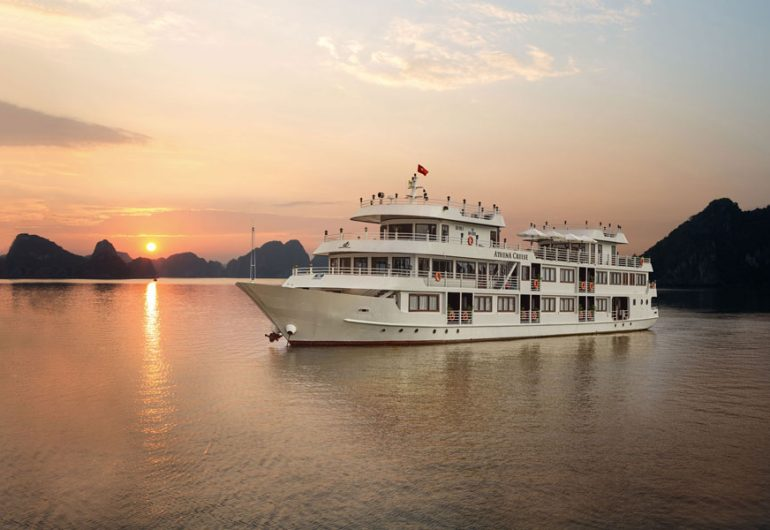
Sunset Cruise
I stayed on a boat anchored at sea and enjoyed a wide range of activities, including exploring
caves and kayaking. The meals served on board were delicious, and the experience—surrounded by
such beautiful scenery—was truly memorable.

Water Puppet Show
This traditional performing art originated in the rural villages of northern Vietnam about 1,000 years ago and later evolved into a form of court art. Performers, standing waist-deep in water, use bamboo poles and strings—concealed behind a bamboo screen—to bring the puppets on the water’s surface to life.

Sai Gon Skydeck
From the glass-enclosed observation area, you can take in panoramic views of the Saigon River and Ho Chi Minh City, where the contrast between traditional streetscapes and modern skyscrapers unfolds. The scenery is spectacular by day, and even more so as the sun sets and the city transitions into a dazzling nighttime panorama.
New York

One World Trade Center
During my first visit to New York, I went to the 9/11 WTC Memorial & Museum. I offered prayers for the victims and the firefighters. The scenes of the planes striking the towers and the subsequent collapse—which I watched unfold in real time on television—remain so vivid in my memory that, even now, recalling them makes my whole body tremble.

Rockefeller Center
The night view of New York as seen from "Top of the Rock"—located at the very top of Rockefeller Center—is a breathtaking 360-degree panorama that looks just like a jewel box. You will be captivated by the elegant design of the Chrysler Building and the radiance of the Empire State Building, whose spire changes color to mark special occasions.
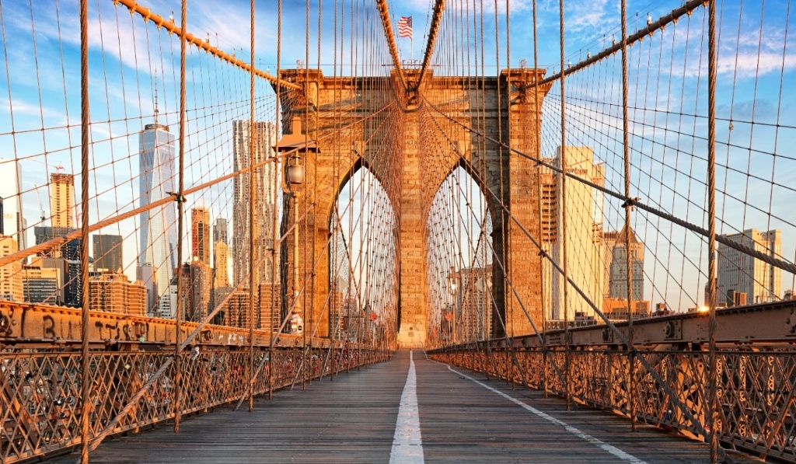
Brooklyn Bridge
From the open pedestrian deck of the Brooklyn Bridge, you can enjoy panoramic views of the Manhattan skyline and the Statue of Liberty, which stands on Liberty Island in New York Harbor. At the foot of the bridge, Brooklyn Bridge Park hosts street performers and various events.

Sunset in NY
I stumbled upon a rare and breathtaking sunset, framed by the towering skyscrapers of Manhattan. As the sun shone brilliantly at the end of a long, straight corridor of buildings, it bathed the streets and asphalt in a golden hue—a miraculous moment where the vast metropolis and the natural world converged, leaving me so captivated that I found it difficult to tear myself away.
Contact
Profile
Name : KAORI TANAKA
Email Address : for.scent.study@gmail.com
Address : Park Central Building, I.T Park, Cebu City
Teams ID : Team-JAKE
My Hobbies
- self-improvement
- Body maintenance
- Snowmobile
- Drive
- Watching Movies
- Family trip